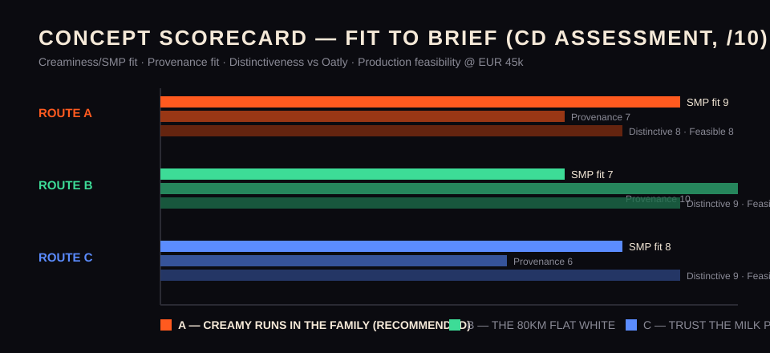

---
structured:
document_stage: "concept-deck"
brief:
document_stage: "creative-brief"
brand: "Velvet Oat"
client: "Aurora Dairy"
market: "Republic of Ireland"
budget_eur: 120000
budget_breakdown:
- line: "Creative development & production"
amount_eur: 45000
- line: "Paid social & digital video"
amount_eur: 35000
- line: "OOH (Dublin/Cork/Galway transit & cafe proximity)"
amount_eur: 22000
- line: "Cafe sampling & barista partnerships"
amount_eur: 12000
- line: "Contingency"
amount_eur: 6000
business_objective: >-
Establish Velvet Oat as the #2 oat milk brand in the Irish off-trade within 12 months of launch:
12% value share of the oat segment, EUR 2.4m retail sales value, listings in all five major
multiples (Dunnes, Tesco, SuperValu, Lidl, Aldi) plus 150 independent cafes serving it as their
house oat. Secondary objective: 65% prompted brand awareness among the core audience by month 12,
and measurable halo onto Aurora Dairy's corporate reputation as a modern, sustainable food business.
client_background: >-
Aurora Dairy is a third-generation Irish dairy co-operative headquartered in Tipperary, owned by
roughly 1,400 farming families and best known for butter and fresh cream sold in every major Irish
multiple. Liquid dairy milk volumes in Ireland have been flat-to-declining for five consecutive
years while plant-based alternatives have grown double digits, led by oat. Rather than watch
imported brands (Oatly, Alpro, Glenisk's oat range) own the category, the board has approved
Velvet Oat: a premium, barista-grade oat milk made from Irish-grown oats, blended and packed at
Aurora's existing Cahir facility. The provenance story is genuine — contracted oat growers within
80km of the plant — and the product wins blind taste tests on creaminess and foam stability. The
risk is credibility: a dairy co-op selling oat milk invites accusations of bandwagon-jumping, and
the brand must feel like a confident act of craft, not a defensive line extension.
key_insight: >-
Irish people didn't abandon dairy — they fell in love with coffee, and oat milk is simply what
great coffee drinks now. The people who know milk best — Irish dairy farmers — are exactly the
people you'd trust to make the creamiest oat milk. What looks like a contradiction is actually
the strongest possible credential.
single_minded_proposition: >-
Velvet Oat: the creamiest oat milk in Ireland, made by the people who know creamy best.
target_audience:
description: >-
Irish adults 25-44, urban and commuter-belt, who already buy plant-based milk weekly but are
not vegan — 'flexi-dairy' shoppers who keep both oat and cow's milk in the fridge. They skew
female (60/40), ABC1, coffee-literate, and buy on taste and texture first, ethics second,
price third. They are sceptical of multinational wellness marketing but warm strongly to
genuine Irish provenance.
primary_persona:
name: "Sorcha"
age: 31
location: "Dublin 8, originally from Cork"
occupation: "UX designer, hybrid worker"
profile: >-
Sorcha spends EUR 4 a day on flat whites and owns a EUR 400 home espresso machine she bought
during lockdown. She switched to oat milk for coffee three years ago because it tastes better
in espresso, not because she gave up dairy — there is Aurora butter in her fridge right now.
She buys Oatly out of habit but resents its knowing, shouty tone, and she reads labels:
'oats from Sweden' in an Irish supermarket quietly annoys her.
tension: >-
She wants her everyday choices to feel local and considered, but the plant-based aisle makes
her choose between Irish identity and category credibility.
mandatories:
- "Velvet Oat brand identity and Aurora Dairy endorsement lock-up on all assets"
- "Irish-grown oats / 'Grown within 80km' provenance claim must appear in every execution"
- "Barista performance (foam/stretch) must be demonstrated, not just claimed"
- "No denigration of dairy — Aurora's core business and farmer-owners must be respected"
- "All claims substantiated to ASAI standards; recyclable carton messaging where space allows"
- "Irish-language tagline variant required for TG4 and Gaeltacht OOH placements"
deliverables:
- "Launch campaign platform and tagline (English + Irish variant)"
- "1 x 30s hero online video plus 15s/6s cutdowns"
- "OOH master set: 6-sheet, 48-sheet, digital transit formats"
- "Paid social toolkit: 12 statics, 6 short-form videos (9:16)"
- "Cafe kit: cup sleeves, A-frame, barista 'house oat' POS"
- "Launch PR moment concept"
success_metrics:
- "12% value share of Irish oat segment by month 12 (Nielsen)"
- "EUR 2.4m retail sales value in year one"
- "65% prompted awareness in core audience (month 12 tracker)"
- "150 independent cafes stocking as house oat"
- "Paid video: 65%+ VTR on 15s, CPM under EUR 4.50"
- "Sampling conversion: 20% of sampled cafe customers claim intent to buy"
timeline:
- milestone: "Brief approved"
date: "2026-06-12"
- milestone: "Concepts presented (3 routes)"
date: "2026-06-26"
- milestone: "Client pitch / route selection"
date: "2026-07-10"
- milestone: "Production complete"
date: "2026-08-21"
- milestone: "In-market launch"
date: "2026-09-07"
origin_task_summary: >-
Original pipeline task: Aurora Dairy launches 'Velvet Oat', a premium oat milk, in Ireland with
EUR 120,000 total budget. Three-stage transformation: (1) structured creative brief — this
document; (2) creative director's concept deck; (3) client-facing pitch deck. Each stage must be
a substantially different document type.
concepts:
- concept_name: "Creamy Runs in the Family"
big_idea: >-
Three generations of Irish families have trusted Aurora to make things creamy. Velvet Oat is
not a pivot — it is the same obsession with creaminess applied to a new crop. We dramatise
mastery handed down: from the churn to the portafilter.
tagline_en: "Creamy runs in the family."
tagline_ga: "Tá an uachtar sa dúchas againn."
tone: "Warm, confident, quietly proud. Cinematic craft. Zero smugness."
key_visual_description: >-
Split-frame portrait against a deep charcoal field: a weathered farmer's hands cupping fresh
Irish oats on the left, a barista's hands finishing a rosetta in a flat white on the right —
one continuous arc of cream-coloured pour connecting the two frames.
hero_execution: >-
30s film. Archival-textured footage of butter being churned in the 1960s match-cuts through
three generations of the same family farm — recurring hands motif — landing on the modern
Cahir line filling Velvet Oat cartons and a Dublin barista stretching it into perfect
microfoam. VO: 'We've spent three generations getting creamy right. The crop changed.
The standard didn't.'
sample_headlines:
- "Three generations of creamy. One new crop."
- "The people who made Sunday creamy now make your flat white."
- "We didn't switch sides. We brought the cream with us."
channel_plan:
ooh: "48-sheets pairing farm-hand / barista-hand imagery on Dublin, Cork and Galway commuter corridors; 6-sheets within 200m of specialty cafes."
social: "'Generations' interview snippets with real Aurora farming families; macro foam-stretch reels; 15s/6s cutdowns of the hero film."
cafe_sampling: "Cup sleeves reading 'Creamy runs in the family'; barista house-oat POS with side-by-side foam-stability demo cards; farmer-and-barista sampling days."
risk_watch_out: >-
Heritage cues can read backward-looking to a 31-year-old; the grade, typography and casting
must stay aggressively modern or this becomes a butter ad.
why_it_answers_the_brief: >-
Dramatises the single-minded proposition word for word — the creamiest oat milk, made by the
people who know creamy best. Honours every mandatory natively: the Aurora endorsement is the
hero rather than a lock-up afterthought, dairy is celebrated not denigrated, barista
performance is demonstrated on camera, and the 80km provenance line sits naturally in every
end frame.
- concept_name: "The 80km Flat White"
big_idea: >-
Make the radically short supply chain the star: every other oat milk in the chiller commuted
further than you did today. We turn the 80km provenance claim into a measurable, mappable brag
at every single touchpoint.
tagline_en: "Grown down the road. Poured up the street."
tagline_ga: "Fásta in aice láimhe."
tone: "Modern, witty, locally proud. Data-as-design."
key_visual_description: >-
A stark single cream-coloured route line traced across a near-black map, from an oat field to
a steaming cup, with the distance set huge: '63KM FROM FIELD TO THIS FLAT WHITE.'
hero_execution: >-
30s film follows one carton's journey with running on-screen distance captions — field at dawn
(0km), Cahir plant (14km), distribution (61km), Dublin cafe pour — intercut with an anonymous
rival carton's itinerary stamped 'OATS: SWEDEN — 2,400KM'. The comparison targets import miles,
never dairy, keeping the no-dairy-bashing mandatory intact.
sample_headlines:
- "Your oat milk has more air miles than you do."
- "These oats grew 63km from this bus stop."
- "Local enough to wave at the field."
channel_plan:
ooh: "Geo-dynamic digital transit panels computing the real distance from each panel to the growing fields; static 48-sheets with the route-line key visual."
social: "'Meet your 80km' farmer cameo series; foam tests poured at the field gate; carton-journey timelapse."
cafe_sampling: "A-frames stating each cafe's own field distance; cup sleeves printed with km counts; grower postcards at sampling stands."
risk_watch_out: >-
Provenance leads and creaminess follows — taste and texture, the audience's number-one
purchase driver, risk becoming secondary; the comparative air-miles framing needs careful
ASAI substantiation.
why_it_answers_the_brief: >-
Weaponises the genuine 80km mandatory as the campaign engine, lands precisely on Sorcha's
stated 'oats from Sweden' irritation, and is maximally distinctive against Oatly's
tone-of-voice-led category codes.
- concept_name: "Trust the Milk People"
big_idea: >-
Lean into the contradiction everyone will raise anyway — a dairy co-op making oat milk — and
answer it with deadpan confidence: who exactly did you expect to make the creamiest oat milk?
The voice is dry Irish understatement, the structural anti-Oatly.
tagline_en: "Made by the milk people."
tagline_ga: "Déanta ag muintir an bhainne."
tone: "Deadpan, dry, self-aware. Minimal words, huge type."
key_visual_description: >-
A stoic Tipperary farmer standing in a milking parlour, holding a tiny, perfect flat white
with a flawless rosetta, looking straight down the lens, entirely unimpressed by how good it is.
hero_execution: >-
30s film. A sceptical Dublin barista grills a visiting Aurora farmer: 'But you're dairy
farmers.' The farmer, pulling a perfect stretch of Velvet Oat microfoam, replies: 'And what
would we know about cream?' Beat. Pack shot, lock-up, 80km line.
sample_headlines:
- "Oat milk from dairy farmers. Obviously."
- "We know cream. The oats are new."
- "You were expecting a tech startup?"
channel_plan:
ooh: "Type-led 6-sheets: one dry line plus the carton, nothing else; high-frequency city-centre placements."
social: "'Farmer reviews oat milk trends' deadpan series; reply-guy community management in the same voice."
cafe_sampling: "Cup sleeves with rotating one-liners ('Yes, we're the milk people. Yes, it's oat. Keep up.'); A-frames in the campaign voice."
risk_watch_out: >-
Irony can tip into exactly the knowing, shouty register Sorcha resents in Oatly, and the
'milk people' wordplay must never read as mocking either plant-based customers or Aurora's
own farmer-owners.
why_it_answers_the_brief: >-
Pre-empts the bandwagon-jumping accusation — the credibility risk the brief itself names — by
owning it with confidence; it is the cheapest route to produce and the most shareable, though
it carries the highest tonal risk.
recommended_concept: "Creamy Runs in the Family"
recommendation_rationale: >-
Route A is the only concept that dramatises the full single-minded proposition — both the
creaminess claim and the makers' credential — rather than one half of it. It carries every
mandatory natively instead of by bolt-on, it is the lowest tonal risk for a persona who is
actively allergic to category snark, and it scales across the EUR 45k production line because
the hero film is interview-and-macro craft rather than location-heavy. Route B's geo-distance
engine should be folded into Route A's OOH layer as the provenance expression, and Route C's
dry voice retained as seasoning for social community management. Recommend presenting A as lead,
B as strong alternative, C as tonal provocation.
irish_language_note: >-
Assumption: Irish-language tagline variants are creative-director drafts and must be verified by
a native Irish speaker / TG4 copy review before production.
decision:
agent: creative-director
action: "produced 3 concepts, recommended one"
rationale: >-
Developed three distinct routes against the pinned brief: A 'Creamy Runs in the Family'
(heritage-of-craft, dramatises the SMP in full), B 'The 80km Flat White' (provenance-as-data,
built on the genuine 80km claim and Sorcha's import-oats irritation), C 'Trust the Milk People'
(deadpan confidence, pre-empting the bandwagon accusation). Recommended A because it is the only
route covering both halves of the SMP, carries all six mandatories natively, has the lowest
tonal risk for the flexi-dairy persona, and fits the EUR 45k production envelope; B's geo-OOH
engine folds in as A's provenance layer and C's voice survives as social seasoning. The document
metamorphosed from a light formal brief into a dark display-typography concept deck under a new
schema; the full hop-1 brief is preserved under 'brief'. Pinned so the pitch-lead keeps the
concepts and the carried brief reachable.
pinned: true
---
VELVET OAT — Concept Deck — Aurora Dairy
01
AURORA DAIRY × VELVET OAT · CONCEPT DECK · HOP 2 OF 3 · 10 JUNE 2026
THREE WAYS TO OWN CREAMY.
Three campaign routes for the launch of Velvet Oat in the Republic of Ireland. One brief, one proposition, EUR 120,000 — and one recommendation.
“Velvet Oat: the creamiest oat milk in Ireland, made by the people who know creamy best.”
The job
#2 oat brand in the Irish off-trade in 12 months: 12% value share, EUR 2.4m retail value, five multiples, 150 cafes as house oat. EUR 120k total.
The person
Sorcha, 31, Dublin 8. Flexi-dairy flat-white obsessive. Buys Oatly out of habit, resents its shouty tone, quietly fumes at 'oats from Sweden' on an Irish shelf.
The truth
Irish people didn't abandon dairy — they fell in love with coffee. Dairy farmers are exactly who you'd trust to make the creamiest oat milk.
The guardrails
Aurora lock-up everywhere. 80km provenance in every execution. Foam demonstrated, not claimed. No dairy-bashing. ASAI-clean. Irish-language tagline variant.
Full stage-1 brief carried verbatim in this document's structured data under brief: — nothing dropped.
A
ROUTE A — RECOMMENDED
CREAMY RUNS IN THE FAMILY
Three generations of Irish families have trusted Aurora to make things creamy. Velvet Oat isn't a pivot — it's the same obsession applied to a new crop. Mastery handed down: from the churn to the portafilter.
“Creamy runs in the family.” / Tá an uachtar sa dúchas againn.
Key visual
Split-frame on deep charcoal: a farmer's weathered hands cupping oats; a barista's hands finishing a rosetta — one continuous cream-coloured pour arcing between the two.
Hero 30s
Churn footage from the 1960s match-cuts through three generations of the same farm to the Cahir line and a Dublin barista's microfoam. VO: “We've spent three generations getting creamy right. The crop changed. The standard didn't.”
Headlines
Three generations of creamy. One new crop.
The people who made Sunday creamy now make your flat white.
We didn't switch sides. We brought the cream with us.
Channels
OOH: hand-pairing 48-sheets on commuter corridors; 6-sheets within 200m of specialty cafes. Social: real farming-family 'generations' snippets, macro foam reels, hero cutdowns. Cafe: 'Creamy runs in the family' sleeves, house-oat POS with foam-stability demo cards, farmer-and-barista sampling days.
Watch-out
Heritage can read backward-looking to a 31-year-old — grade, type and casting must stay aggressively modern or this becomes a butter ad.
B
ROUTE B
THE 80KM FLAT WHITE
Every other oat milk in the chiller commuted further than you did today. We make the radically short supply chain the star — a measurable, mappable brag at every touchpoint.
“Grown down the road. Poured up the street.” / Fásta in aice láimhe.
Key visual
One cream route-line across a near-black map, field to steaming cup, distance set huge: “63KM FROM FIELD TO THIS FLAT WHITE.”
Hero 30s
One carton's journey with live distance captions — field (0km), Cahir (14km), depot (61km), Dublin pour — against a rival carton stamped 'OATS: SWEDEN — 2,400KM'. The target is import miles, never dairy.
Headlines
Your oat milk has more air miles than you do.
These oats grew 63km from this bus stop.
Local enough to wave at the field.
Channels
OOH: geo-dynamic transit panels computing real panel-to-field distances. Social: 'Meet your 80km' farmer cameos, foam tests at the field gate. Cafe: A-frames with each cafe's own field distance, km-count sleeves, grower postcards.
Watch-out
Provenance leads, creaminess follows — the audience's #1 purchase driver risks going secondary; comparative air-miles claims need careful ASAI substantiation.
C
ROUTE C
TRUST THE MILK PEOPLE
Lean into the contradiction everyone will raise anyway — a dairy co-op making oat milk — and answer with deadpan confidence: who exactly did you expect to make the creamiest oat milk? Dry Irish understatement. The structural anti-Oatly.
“Made by the milk people.” / Déanta ag muintir an bhainne.
Key visual
A stoic Tipperary farmer in a milking parlour holding a tiny, perfect flat white with a flawless rosetta, dead-eyed down the lens, entirely unimpressed by how good it is.
Hero 30s
A sceptical Dublin barista grills a visiting farmer: “But you're dairy farmers.” The farmer, pulling a perfect Velvet Oat stretch: “And what would we know about cream?” Beat. Pack shot, lock-up, 80km line.
Headlines
Oat milk from dairy farmers. Obviously.
We know cream. The oats are new.
You were expecting a tech startup?
Channels
OOH: type-led 6-sheets — one dry line plus the carton, nothing else. Social: 'farmer reviews oat milk trends' deadpan series, in-voice community management. Cafe: rotating one-liner sleeves (“Yes, we're the milk people. Yes, it's oat. Keep up.”).
Watch-out
Irony can tip into exactly the knowing register Sorcha resents in Oatly — and the wordplay must never read as mocking plant-based customers or Aurora's own farmer-owners.
06
THE CALL
RECOMMENDATION: ROUTE A.

RECOMMENDED
Creamy Runs in the Family is the only route that dramatises the full proposition — the creaminess claim and the makers' credential — rather than one half of it. It carries all six mandatories natively, is the lowest tonal risk for a persona allergic to category snark, and fits the EUR 45k production envelope as interview-and-macro craft rather than location-heavy shooting.
Hybridisation plan: fold Route B's geo-distance engine into Route A's OOH layer as the provenance expression, and keep Route C's dry voice as seasoning for social community management. Present A as lead, B as strong alternative, C as tonal provocation.
Assumption: Irish-language lines are CD drafts pending native-speaker / TG4 copy review. → Next hop: pitch-lead turns this deck into the client-facing pitch for the 10 July route-selection meeting.